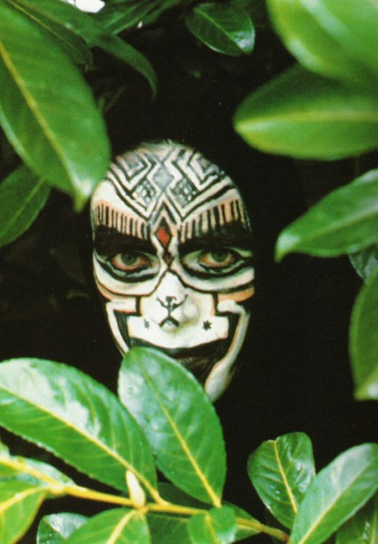

Q Magazine Photographic Supplements
Volume 5 - April 1990 - Portraits
Denis O'Regan/Idols
Back
23/31

Next
25/31
Peter Gabriel applies just a hint of foundation for the video for his '82 single Shock The Monkey, filmed at the bottom of his garden.